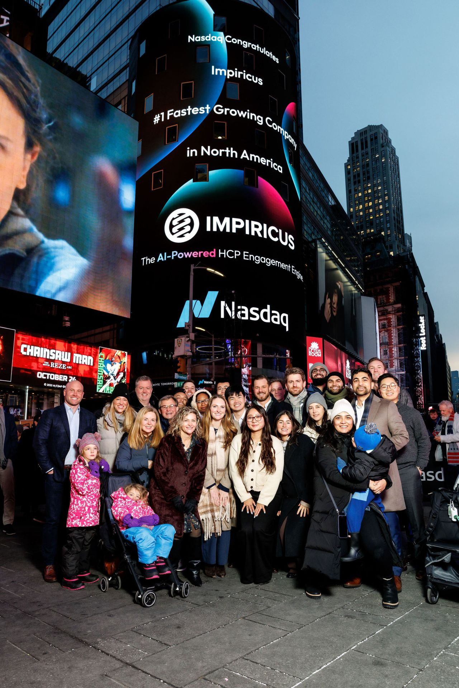
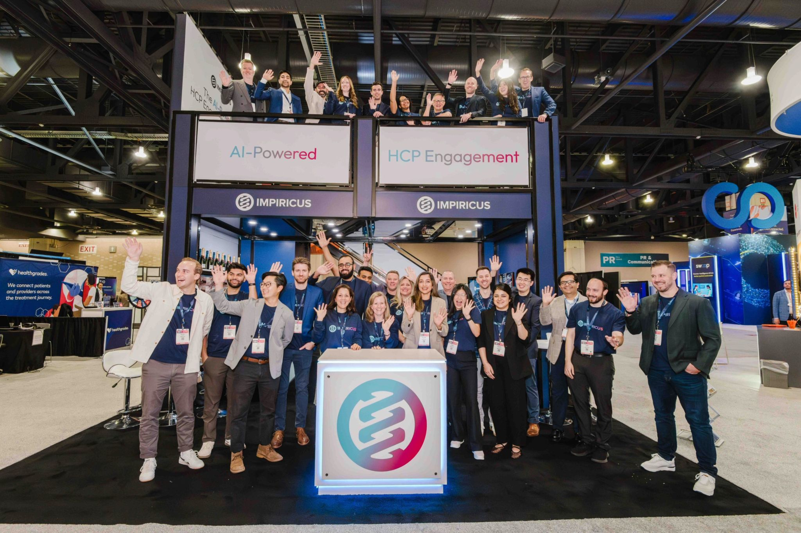
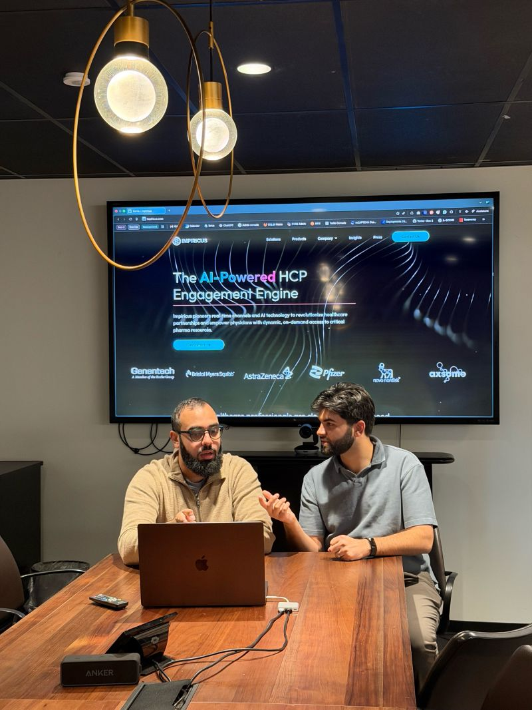
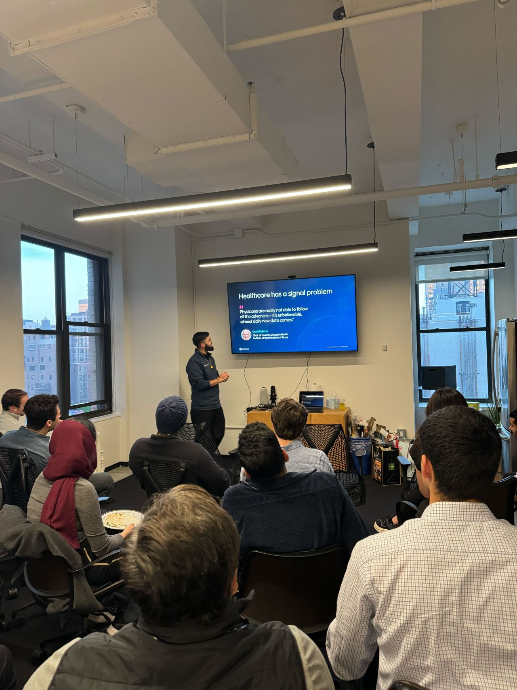
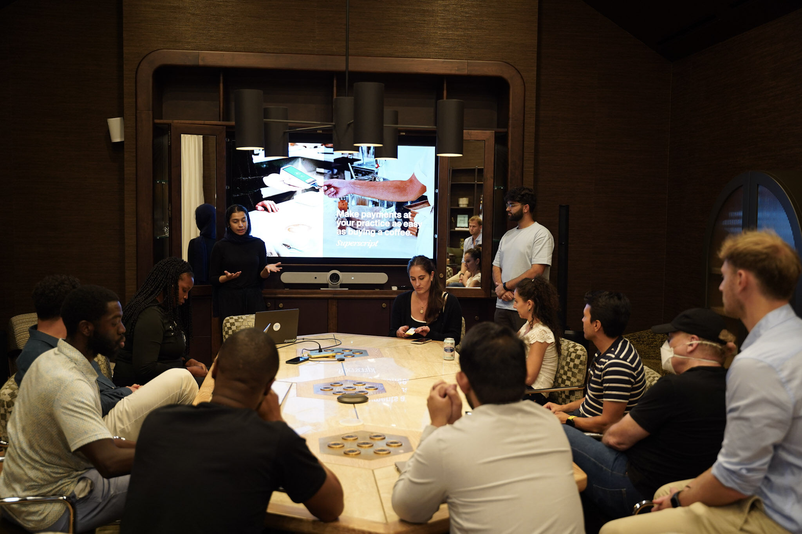
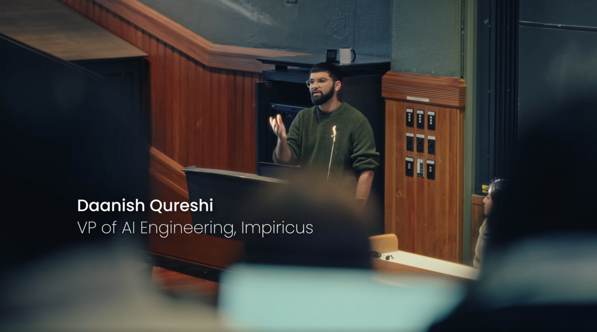

LEADING AI IN HEALTH-TECH, BUILDING THE ECOSYSTEM AROUND IT.
Industry leadership, founding work, and community-building across the NYC health-tech and pharma-tech landscape.
01 // AI LEADERSHIP

IMPIRICUS
Leading AI at Impiricus, a pharma-tech company building HCP (healthcare provider) engagement software. Work spans agentic AI systems, optimization, and operations research, applying an applied-mathematics foundation to deployed software used across pharmaceutical and provider networks. Scope includes predictive modeling of provider behavior, voice-based clinical workflow automation, and intelligent content systems for physician education. This work drives product innovation, operational efficiency, and cross-functional team growth.
Recognized as the fastest-growing technology sector achievement in the 2024 cohort.
-
PREDICTIVE_MODELING
Predictive modeling of provider behavior across pharmaceutical and provider networks.
-
VOICE_&_CLINICAL_WORKFLOW
Voice-based clinical workflow automation for healthcare providers.
-
CONTENT_SYSTEMS
Intelligent content systems for physician education.
-
ASCEND_PLATFORM
Architected and built the Ascend platform from the ground up, the AI foundation that powers Impiricus at scale.
-
PRODUCT_PORTFOLIO
Owns a portfolio of flagship AI products, including Rep Connect, Pulse, ION, and Virtual Coordinator.
-
AI_RESEARCH
Leads AI research at Impiricus, turning early experimentation into production-grade capability across the platform.


02 // STARTUP EXPERIENCE
LITGRAB
Founded an AI medical education company built on agentic AI and AI research using statistics, as Head of Product. The product sold competitive intelligence to pharmaceutical companies. Led product development through an early acquisition by Impiricus.
That drive to build carried into the ecosystem work described below, from advising other founders to hosting events like Hackers and Healers and the Healthtech Builder's Circle.
SEHAT SYSTEMS
Co-founded Sehat Systems, an Arabic-language AI medical scribe built for a mobile electronic health record (EHR) system, the first of its kind. The goal was to help democratize EHR access in the Middle East, where EHR adoption is far less common than in the US. The venture was family and friends funded, and wound down after validating limited product-market fit.
AMORCER
Investor and advisor to Amorcer, an AI-native platform helping clinicians launch and operate virtual chronic-care clinics (the name comes from the French amorcer, "to launch"). Per the founders' own account, the company was later acquired by 3Y Health, a venture-backed practice-management platform for clinician entrepreneurs (backed by 8VC, Founders Fund, General Catalyst, SoftBank, and Sound Ventures).
03 // BUILDING THE ECOSYSTEM

HACKERS AND HEALERS MIXER
On May 1st, co-hosted the Hackers and Healers Mixer with Mujtaba from DxAngels, hosted at the new Impiricus NYC office. The goal was simple: bring together people who build technology and people who practice medicine, then leave the rest to them.
"Healthcare needs more of this. Builders should hear directly from clinicians about what is broken, what is frustrating, and what is actually worth solving. Clinicians should have space to brainstorm when the right technical people are in the room."

HEALTHTECH BUILDER'S CIRCLE
On Sept 18th, hosted a Healthtech Builder's Circle in NYC, bringing together doctors, engineers, founders, and investors to tackle some of the most pressing problems in healthcare.

HARVARD UNIVERSITY TALK
Presented and spoke at Harvard University in partnership with Harvard Computer Society and HCS Tech for Social Good, as VP of AI Engineering at Impiricus.
The applied-math instincts show up outside of work too, including a lighthearted, fully-formalized write-up, "A Mathematical Optimization Framework for Office Layout Design," modeling office desk and chair arrangement as a constrained optimization problem (room boundaries, door clearance, non-overlap constraints, connectivity via graph search, and an explicit objective function).
View the post →